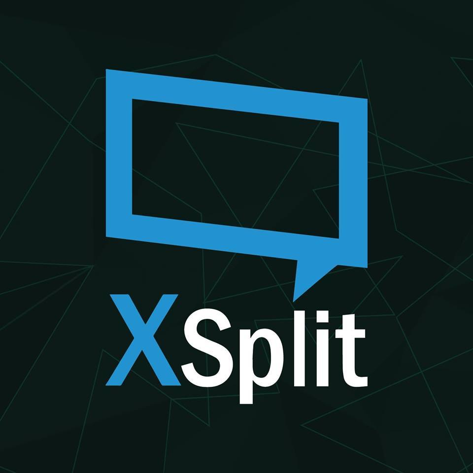

This page will cover broadcasting software that is used by many livestreamers
Click the icons to be brought to the software page
| Program | Description | Pros | Cons |
|---|---|---|---|
|  | Xsplit is a paid service aimed at youtube and streaming usage | More features, dedicated support teams | VERY CPU heavy, not as user friendly, and an be difficult to setup |
| OBS is a free to use software program that allows you to broadcast gameplay as well as make recordings | free to use, easy to setup, works well with new users, less cpu heavy | less features, occasionally has issues, sometimes you lose all of your settings |